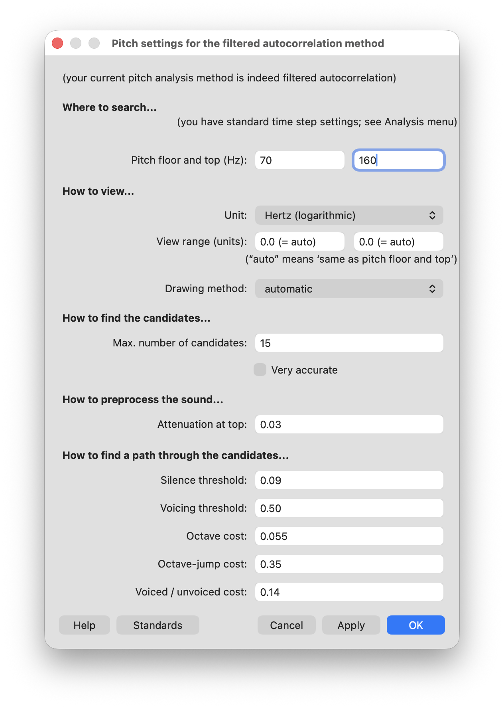
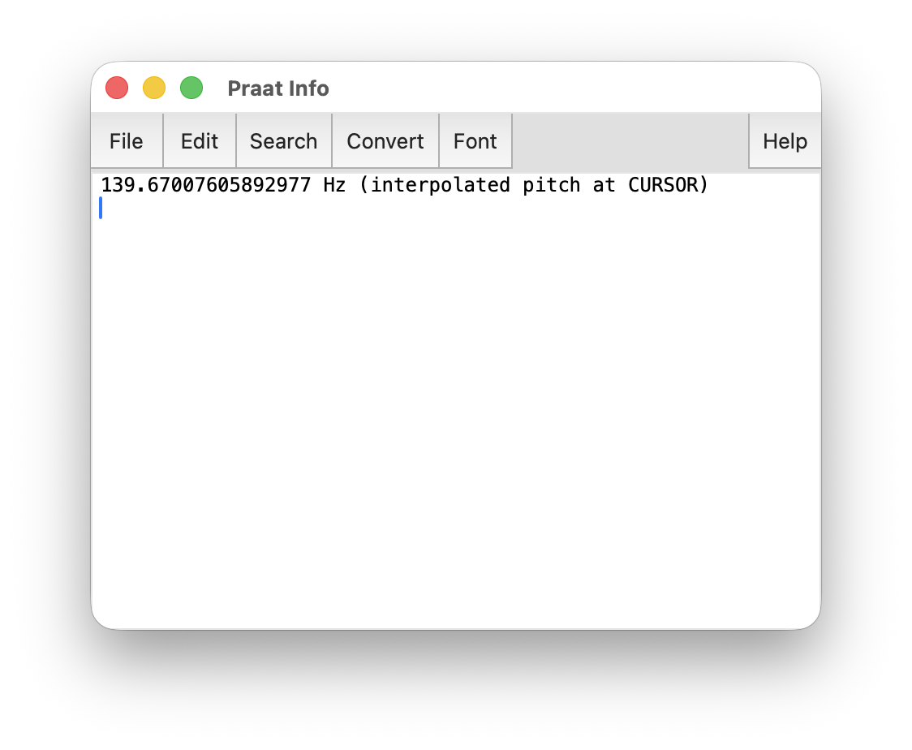
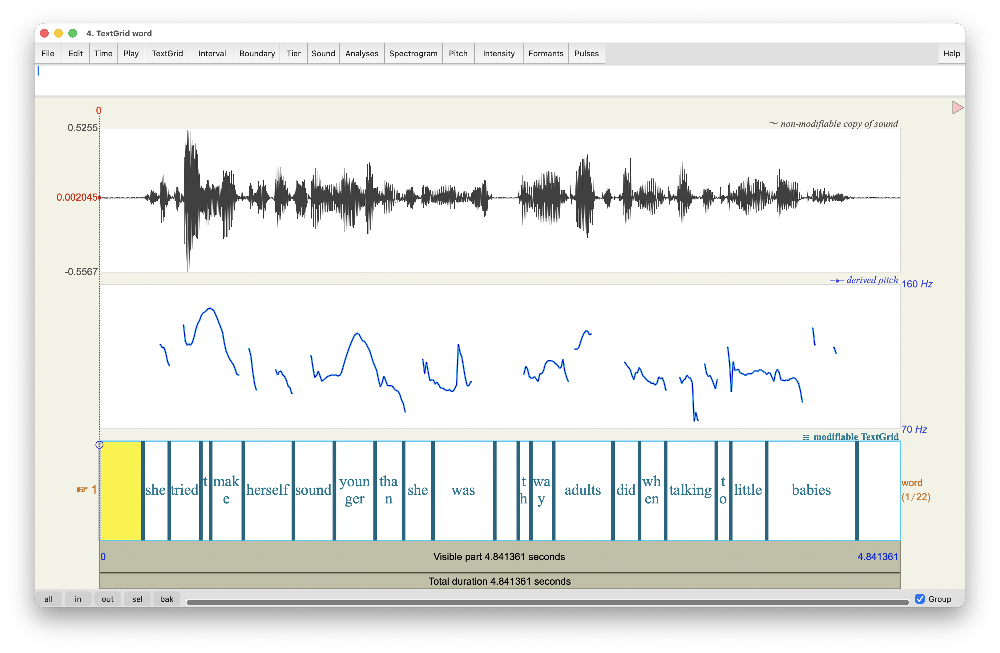
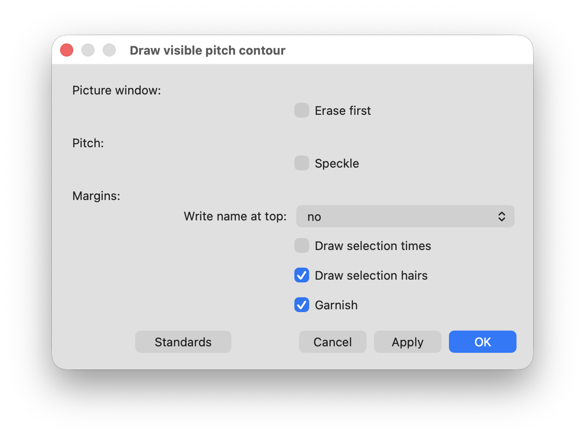
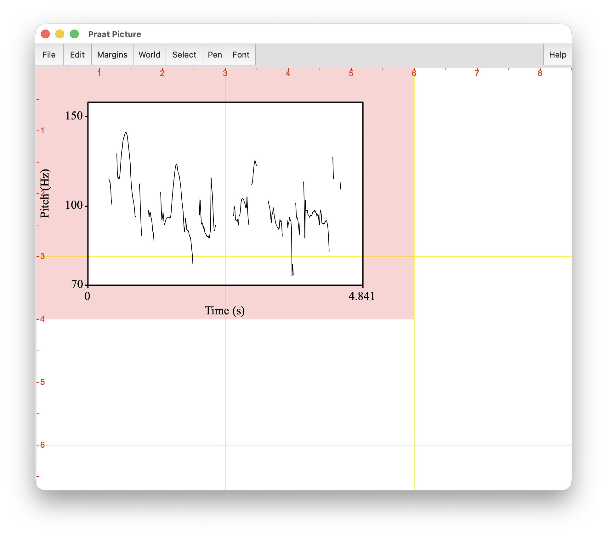
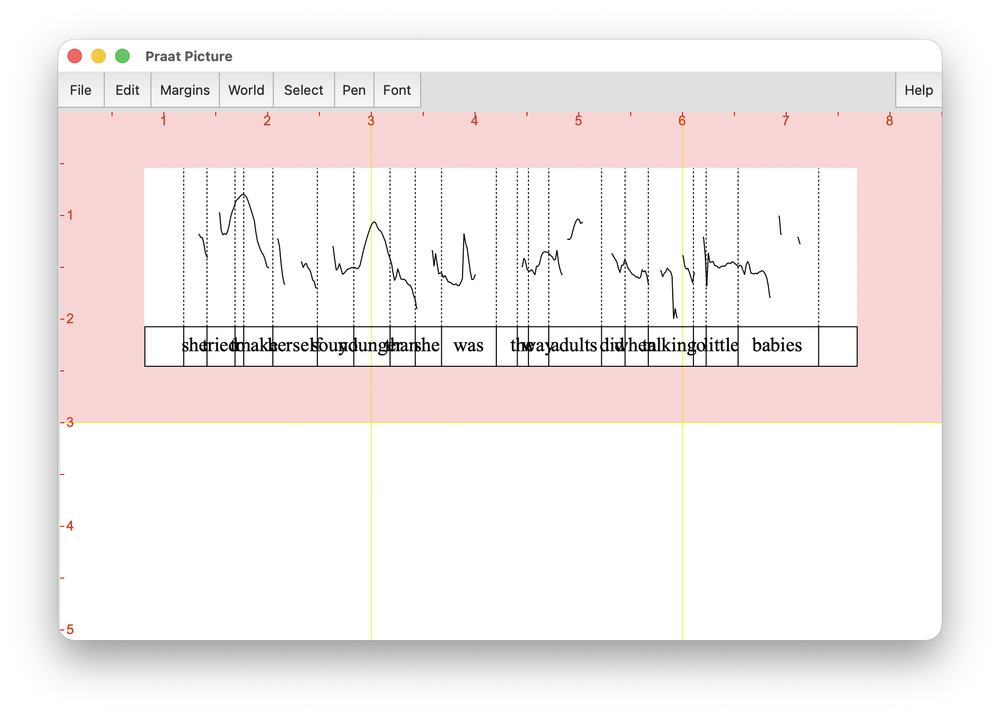
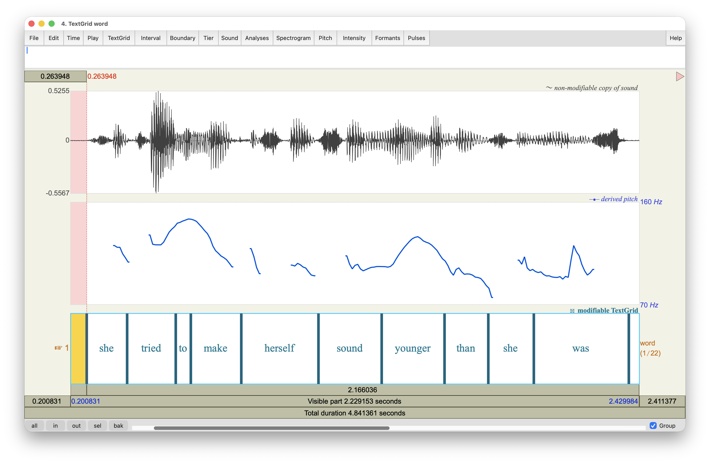
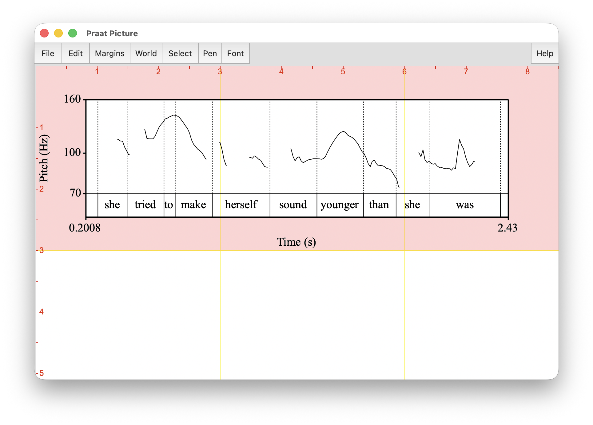
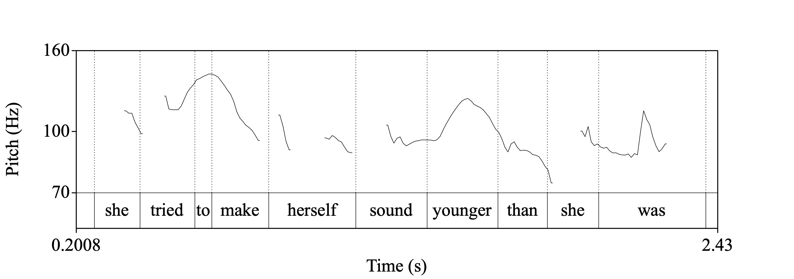

This handout is meant to accompany the Praat workshop that I gave to the Voice and Speech Teachers Association (VASTA) on July 25, 2026. The goal for this workshop is to introduce the fundamentals of Praat for voice and speech professionals who have little or no prior experience with the software. In this handout, I’ll cover how the acoustic correlates of elements of speech like pitch, vowel quality, and voice quality are represented visually. I hope that you’ll be able to walk away with some practical skills for exploring and understanding speech. At the end, I’ll show some tools that I’ve recently developed that may be helpful for you that relate to this.
The basics
Praat (Dutch for “talk”) is a free computer software package for the scientific analysis of speech and phonetics. Written and maintained by Paul Boersma and David Weenick, Praat has tons of features and can do a very wide range of functions for processing speech. Recently, Anastasia Shchupak has joined as co-author and is involved in AI tools like transcription. Of the many things that Praat can do, I can only show a small portion of them. Hopefully I’ve selected a set of features that’ll be useful for you.
I’ll be the first to say that Praat definitely has some negative aspects:
Praat is not the most visually appealing program. The icon, which is supposed to look like an ear and lips, probably hasn’t changed since the 90’s when the software was first created.
It is also not the most intuitive software. Everything is hidden behind menus and buttons and everything takes a lot of clicks.
It’s not the easiest software to learn how to use. The documentation online can be brief and never seems to has enough detail. There are no books on how to use Praat. There are tutorials but they’re scattered and often are aimed at performing specific tasks. There is help within the software itself, but it’s not easy to use.
In the past, Praat has been unstable. It would often crash without warning, meaning you’d lose all your work. There is no autosave feature. Recent versions seem more stable, but there’s always a small chance of it crashing.
With that said, Praat is still a highly sophisticated piece of software under-the-hood. There are some definite pros for using Praat:
It’s the standard. Nearly every linguist has used Praat at some point. People in allied fields who study speech likely hav as well.
While the software itself may not be pretty, the visualizations it can produce are professional quality.
It actually has its own scripting language, to help automate any function it can do. This is especially useful if you have a task that you need to do over and over. Unfortunately, I can’t show how to script here, but there are tutorials online, including my own. See Section 8 for links to those.
It’s free.
The pros outweigh the cons for sure.
Download and installation
Praat is available at praat.org and can run on a variety of operating systems. To install it, simply go to praat.org and at the upper left of the site, click on your computer’s operating system. The program is relatively small and simple to run. To open Praat, click on its icon like any other program on your computer.
Make sure you have Praat installed before moving ahead!
The Praat interface
When you first open Praat, there will be two windows that appear. One will have a pink rectangle and is where visualizations will occur. For now, we don’t need to worry about it, and you can just close it.
The other window is your home base for Praat (Figure 1). It’s called the object window and is where your Praat objects will appear. Praat objects can be of many different types, such as Sound, TextGrid, or Formant (we’ll get to these later). Strictly speaking these are contained in your computer’s memory and are not automatically saved. This means that if Praat crashes, everything in your object window is lost. So save often!

The menu is relatively straightforward. I say that because while the basic functions are clear, I am not familiar with most of the options in each of these menus. Here are what each of the menu items do and the ones I use:
New: This is where you can create new objects from scratch, such as recording a mono or stereo sound. I have never needed to use any of the other options and submenus in this menu.Open: This is where you can load files already stored on your computer, such as a recording downloaded from the internet or some other Praat-specific file you’ve created in the past. While Praat can handle pretty long sound files, but they take up a lot of memory. So if you’re working with a sound file longer than a couple minutes, it might be better to open it as a LongSound file.Save: This menu allows you to save files in one of many formats, depending on the kind of Praat object. I almost always save audio as a WAV file and everything else as a text file.
As you can see, there are many other options, just in creating, loading, and saving files, but these basic options will serve you just fine.
Moving down the objects window, next is the list of objects. This is where you can see the names of the Praat objects currently in memory. As mentioned previously, these objects can take several forms, and Figure 1 above showed just four of them: Sound, TextGrid, Formant, and Intensity. For each object, the objects window displays what kind of object it is, followed by its name. In this case, object number 1 is a “Sound” object that is named “hello”.
At the bottom of the objects window you will find the fixed buttons. These are “fixed” because they are always there and available, regardless of what is in the list of objects. The utility of the Rename, Copy, and Remove buttons is self-explanatory, and the Inspect and Info buttons show various properties and information about the selected objects.
Finally, on the right side of the window we see the dynamic menu. This side will display buttons for many functions available to whatever Praat object(s) is/are selected. Some things can be performed on Sound files, other are only done on TextGrids. We’ll get into what these functions do later.
Working with Sound
Now that we’ve got some preliminaries out of the way, the first main portion of this workshop will be to work with audio in Praat. We’ll move on to transcriptions (using Praat TextGrids) in Section 3.
Making a recording
Let’s make a recording directly in Praat. You will more likely be loading in your own audio when you use Praat for real-life applications, but it’s good to see how it’s done. Open the SoundRecorder window by following this command:
New > Record mono Sound... Here you’ll see the basic window for recording sound directly into Praat (Figure 2). Depending on your operating system, you may see different options, but the general layout is the same. You can change it to a stereo sound if you have a stereo microphone, but I always use mono to save on disk space. If you have an external microphone plugged in, you can use that for recording. Otherwise, you can use the one that’s built into your computer. On the right, you can set your sampling frequency. For most speech, it’s sufficient to set it at 44,100 Hz, but if you want to set it higher (I guess if you’re recording bats??) you can set it to much higher. The smaller sampling frequency will result in a smaller file size.

When you hit the record button, it’ll display a visual cue of how loud it is in the main center box. You want to stay within the green: if it’s too soft you can always amplify the sound later. Anything in the red means the sound has been clipped which can’t be fixed. When you are done, hit stop. At this point, be careful because it’s easy to lose the recording. For example, if you hit record again, you’ll lose it all and you can’t get it back. Right now, it’s a good idea to save the file (see below).
Go ahead and record yourself saying something. Here is a sentence you can try if you can’t come up with anything short.
“She tried to make herself sound younger than she was, the way adults did when talking to little babies.”
A couple things to know about recording in Praat. First, Praat has a recording buffer. By default, it’s 20 megabytes, meaning it’ll cut you off once the recording takes up that much memory. Audio recorded in stereo or with larger sampling frequencies will eat up more of this memory quicker. You can change this cap by going to this menu
Praat > Preferences > Sound recording preferences...and setting it to a larger buffer. I don’t do very much recording in Praat (I mostly use another free software called Audacity if I need to record from my computer directly), but it’s nice to know how to in case you need it for smaller things. Also, for those who want to know, Praat records with a 16-bit audio depth, which is about the quality of an audio CD.
When you’re ready, go ahead and give your recording a name, and save it to the objects window (Save to list) and close the SoundRecorder window. Or, you can do this all in one step with Save to list & Close.
Saving a recording
Any audio file you have in Praat can be saved. In fact, as mentioned above, you should save often since Praat doesn’t have any sort of auto-save feature. To save an audio file, go to:
File > Save as WAV file…From there, you can navigate to a place on your computer where you want to save the file. Praat sometimes doesn’t automatically add file extensions (the .wav at the end of the filename), so you’ll want to make sure it’s there and type it in yourself if it’s now.
You may know this already, but WAV files are among the best kind to work with when dealing with audio. Some filetypes like mp3s compress the audio by removing information that it things humans won’t notice. When working with Praat, we want the full uncompressed audio type. Making sure you deal only with WAV files if you can is the way to go.
Opening an existing file
If you would like to open an audio file that already exists in your computer, you can do so by following this command:
Open > Read from file… in the objects window. Notice that Praat has another option,
Open > Open Long Sound file…This is useful for when you want to load in, as you might guess, a long sound file. I don’t know if there’s a clear definition of what a “long” sound file is, and it probably depends on your computer. But generally for me, if I’m working with something that’s more than a few minutes long, I’ll open it as a Long Sound file. The difference between them is what Praat stores into your computer’s short term memory. For a regular Sound file (opened using Read from file), Praat will store the entire thing into your computer’s memory. That can eat up a lot of processing power if it’s a big file. Opening a Long Sound means Praat will only load in what it needs at a time, rather than the whole thing. If you load a Sound file and you notice Praat being a big laggy, try Removeing the file and reloading it as a Long Sound file.
You’ll get the most out of this workshop if you have an audio file to work with. Pause here and make sure you have sound. If you do not have access to a microphone right now but would like to follow along still, you may download some sample recordings from some interviews I’ve done at joeystanley.com/data/sample_audio.zip.
Sound objects
Now that you have a Sound file open and selected in Praat, you’ll see lots of options of things you can do in the dynamic menu (Figure 3).

Let’s look at the different options in the dynamic menu.
Sound help: Here, you can see all sorts of help pages relating to Sound files.View & Edit: This opens up the SoundEditor window. We’ll get to that below.Play: Click this and the sound will play. Don’t click this if your file is longer than a few seconds!Draw: This is where you produce and export visuals.Query: This menu button has lot of submenus that let you extract information from your audio such as how long it is, the time where the sound it at its loudest, and lots of other information.Modify: Here is where you can make global changes to the audio: make it louder, turn it backwards, override the sampling frequency, etc.Annotate: This menu allows you to create aTextGrid, which allows annotation of theSoundfile. We’ll get to that later in this workshop.Analyse periodicity: This allows you to extract things like the pitch or signal-to-noise ratio from the audio and analyze them separately.Analyse spectrum: Among other options, this menu allows you to extract and analyze just the formant values in the audio, which is useful for studying vowels.To Intensity…: This extracts just the intensity (=loudness) of the audio and lets you get information from it.Manipulate: This lets you modify parts of audio like the intonation or vowel formants to create a synthesized modification of the audio.Convert: Here is where you can convert stereo to mono, extract portions of the sound, or do pitch alternation.Filter: This menu allows for filtering out low or high sounds. For very noisy recordings or audio that was recorded on bad equipment, this might help the clarity.Combine: If you have multiple recordings you want to either overlay on top of each other or concatenate them, you do that here.
As you can see, there are a lot of options for Sound files. After all, Praat is primarily a tool for analyzing audio. In this workshop, we will use some of these tools, but the majority serve very specific purposes that we don’t have time to get into today. There are some tutorials on some of these online, though they are often geared towards advanced linguistics students.
The SoundEditor window
For now, let’s see how Praat visualizes the sound. After highlighting the Sound file, click View & Edit to open the SoundEditor window. Figure 4 shows the main components of this new window. Taking up the majority of the space are two visualizations: the waveform and the spectrogram. For both of these, the x-axis, represents time. So the beginning of the audio is at the far left and the end is at the far right.

The waveform represents the actual sound wave. When the black portion of the wave form is taller, it’s louder, while smaller ones are quieter. In fact, if you zoom far enough in, you can see that the black shapes become just a single line moving up and down, which represents the sound wave. On the left of the wave form, the numbers at the top and bottom of the y-axis of the wave form (\(0.5255\) and \(-0.5567\)) represent the signal-to-noise (SNR) ratio, which ranges from 0 to 1. The blue number is the SNR measurement at the point where the cursor is. Higher numbers usually indicate cleaner audio, unless it’s a 1 in which case almost certainly means the audio was clipped.
Parallel to and below the waveform is the spectrogram, which is a different way of viewing sound. The spectrogram breaks down the speech signal into its component frequencies using what’s called a Fourier transformation. All you need to know for now is that the top represents higher frequencies while the bottom is lower frequencies. A trained phonetician can actually “read” a spectrogram and know what is being said. If you click on the spectrogram, a red number appears to the left showing the frequency in Hertz (Hz) at that point.
To play portions of the audio, use the rectangles below the spectrogram. In addition to providing information about the duration of each one, if you click on them they’ll play that portion. To start playing somewhere in the middle, just click on the wave form or the spectrogram where you want to start and the rectangles will update. To select a smaller portion of the audio to play, just click and drag and highlight a section.
To change the view, you can zoom in and out with the zoom buttons at the bottom left. You can zoom out to see the whole file (all), or just zoom in (in) or out (out). If you highlight a section of audio, you can zoom to just that selection (sel). You can also go back to your previous view (bak). If you have lateral scrolling on your computer, after you zoom in you can move side to side with that.
At the bottom right is the Group checkbox. If you have multiple SoundEditor windows with the same audio in them (for example, with different TextGrid files), if this box is checked, when you scroll, all windows will scroll in tandem. If you want them to scroll independently, uncheck this box.
Across the top of the SoundEditor window, there are even more menu options, some of which overlap with the dynamic menu options for Sound files we saw earlier:
File: Here you can save the audio to your computer, extract portions of it, or save the visualizations.Edit: Here you can copy and paste portions of audio.Query: This lets you extract information such as the exact time the curser is at.View: This has more specific zoom and playing options.Select: This lets you move the cursor to specific times.Spectrum: Here you can change some of the settings for how the spectrogram is displayed.Pitch: This helps you analyze the pitch of the audio, which is very helpful for those studying intonation and tone. You can display the pitch overlaid on the spectrogram, find the minimum and maximum pitch in a selection, and extract just the pitch contour for visualizations.Intensity: Similar to pitch, this includes options to overlay the intensity contour as well as options for extracting that informationFormant: This is another similar menu item, which displays formant measurements and options for extracting them. This is very handy for studying vowels.Pulses: If you want to study creaky voice, this menu has options for displaying and extracting information about pulses in the vocal folds.
We’ll spend most of the rest of the time in this workshop in this SoundEditor window, once we add a transcription to it.
Working with transcriptions
Unless you’re really good at reading a spectrogram, you’ll likely want a transcription to accompany your Sound file. In the short term, this makes it a lot easier to figure out where you are in the file, especially for long files. But down the road you might find it helpful for other reasons too. Let’s see how Praat works with transcriptions.
TextGrid Objects
Transcriptions in Praat are accomplished using TextGrid files. Before explaining the underlying mechanics of how these work, it might make more sense just to see one. Take a look at Figure 5.

When we view both the Sound file with its TextGrid, we can see how they line up. The waveform and the spectrogram are displayed like before, only underneath those now we have various tiers of text. In this example above, I have three tiers: “phoneme,” “word,” and “utterance”, the last being a catch-all for “sentence” or “breath group”. Each tier can have any number of boundaries, which are represented by the blue vertical lines. These boundaries delimit the intervals in the tier. It is in these intervals that you can type transcription, annotations, or whatever other text you want.
When you click on an interval, it turns yellow with red background. The accompanying portion of the audio is also highlighted. Finally, the text is displayed in the text editor above the wave form but below the menu items. It is here that you can edit the text. Note that since this is a speech analysis software, it is perfectly capable of working with foreign and unusual characters, as you can see with the IPA characters in the first tier.
Many of the commands that were seen for sound files can also be found here as you view both a Sound and a TextGrid object at the same time. You can play, zoom, and highlight portions of the audio and TextGrid. There are a few new commands in the menu:
Interval: This menu allows you to add new intervals to theTextGridfile. These commands come with keyboard shortcuts, so it’s usually easier to use those instead.Boundary: Very similar to the Interval menu, this allows you to add individual boundaries to whatever tier you want.Tier: This lets you add, duplicate, rename, or remove tiers from theTextGrid.
It is usually easier to view TextGrids and Sound files at the same time.
Creating a TextGrid
So, let’s make a TextGrid. To create a new TextGrid that accompanies a Sound file, highlight the Sound file in the Praat Objects window (you may need to close the View & Edit window to see the Praat Objects window) and follow these commands:
Annotate > To TextGrid...In the “Sound: To TextGrid” window, there are two boxes for input. In “All tier names:” delete the default text (“Mary John bell”) and type “phoneme word sentence”. This will create three tiers, one called “phoneme,” one called “word,” and one called “sentence.” Where it says “Which of these are point tiers?”, make sure that’s blank. (That’s used for in-depth analysis of intonation, which we won’t cover in this workshop.) Hit “OK” and you should see your new TextGrid object in your Praat Objects windows. Highlight both of them and then click “View & Edit” to open the TextGrid editor like we saw above.
Working with TextGrids
Adding intervals and boundaries: When you open a brand new TextGrid, there will not be anything in any of the tiers. To add boundaries, click somewhere in the audio and follow this command:
Interval > Add interval on tier 1I’d recommend using the keyboard shortcut: Ctrl/Command + 1. You’ll now see a blue vertical bar on the top tier aligned with the point in the audio you clicked. Go ahead and add an interval on tier 2 and tier 3 as well.
Deleting boundaries: To delete a boundary, click on it—it will appear as red and yellow if it is selected—and follow this command:
Boundary > RemoveOr you can follow the keyboard shortcut: Alt + Backspace.
Moving boundaries: To move a boundary, simply click on it and drag from left to right. If you have boundaries on multiple tiers that are aligned, you can move them together by holding Shift while dragging.
Playing intervals: Once you have several boundaries, the space between them (the intervals) will contain portions of audio. You can play just that portion of audio by clicking the interval and hitting the Tab key. Alternatively, you can click the rectangle below the corresponding portion of the audio and play it as well.
Saving TextGrids: Be sure to save often! All the work you do in Praat is not saved automatically. Even when you’re done, you must explicitly save your TextGrid or else your work will be lost. To save a TextGrid, close the Sound Editor window, highlight the TextGrid in the Praat Objects window, and follow this command:
Save > Save as text file... If Praat doesn’t add it for you, ensure that you add .TextGrid to the filename to ensure that it gets saved properly and so that Praat knows how to open it afterwards.
Use cases
In this section, I’ll demonstrate some of the specific things you can do with Praat. As I do so, I’ll keep certain questions in mind that you may have about your audio. I’ll start by seeing how you can work with pitch, in case you have questions about or want to visualize intonation. I’ll then move on to glottal pulses, which is good if you want to analyze creaky voice or other voice qualities. I’ll then talk about formants, which can be helpful when looking at vowels. We’ll then look at plosive consonants by examining voice onset time (VOT). We’ll end with looking at sibilant consonants by examining center of gravity.
In each section, I’ll present some of the basic Praat functionality including how to extract certain acoustic measurements. We’ll briefly see how to visualize each one. I’ll also discuss a little bit about the phonetics of each phenomena that might aid your interpretatio of what you’re seeting.
Pitch
First, we’ll examine the pitch of speaker’s voice. This is useful if you want to look at intonation or tone (depending on the language). Unfortunately, intonation is notoriously difficult to study and pin down, so I really won’t be able to show much more than simple visualizations and measurements.
Visualizing pitch
Praat can approximate pitch by estimating how often the speaker’s vocal folds are vibrating at any point during your recording. To view these estimates, open a Sound file, either by itself or together with a TextGrid. I’ll use this recording of myself:
Once you’ve got that loaded into Praat, turn on the pitch visualizer by going to
Pitch > Show pitchThis will overlay a blue line on the spectrogram showing the pitch at that time point. It’ll also add a secondary legend to the right side of the spectrogram showing an approximate range of pitch values in the visible portion of the audio. See Figure 6.

In this sample of my voice, the pitch is somewhere between 80 and 140 Hz. It’s a little hard to see the contour though because the pitch range is relatively narrow compared to the full range of 50–800Hz that it can show. Let’s adjust the Pitch settings a little bit by zooming in a little bit on that range. Go to
Pitch > Pitch settings (filtered autocorrelation)…A new window will pop up with a whole bunch of options. We don’t need to worry about all of them. The one we want to adjust are the first two: the Pitch floor and top. You should see 50.0 and 800.0. Since we know the pitch range in the recording is only between about 80 and 140 Hz, let’s zoom in to closer to that range. I’ll try from 70 to 160Hz. Here’s what that should look like now (Figure 7).

That’s the only change we need to make to this window. If you can see this window and your spectrogram at the same time, try clicking on Apply as you watch the blue line. (In Praat, Apply changes the settings and keeps the window open while OK changes the settings and closes the window.) You should notice the blue line is now more spread out vertically since we’ve zoomed into that range (Figure 8).

If that’s a little too zoomed in, you can try zooming out a little, perhaps add another 100Hz or so to the top end. Play with it until you get something that looks good.
There are several algorithms that Praat can use to estimate pitch. In 2023, it switched to the method that we’re using now, the filtered autocorrelation method. The specifics of these methods are not important to beginning users, but you can read about them here.
Since adopting this newer technique, Praat’s pitch tracker has been much better. Previously, Praat’s pitch tracker sometimes it goofs up a little bit. In Figure 9, I’ve switched it to the older method, the raw cross-correlation algorithm.

You can see right near the middle of the sentence, there is a pitch measurement that is super high, right at the top center of the spectrogram. (This happened during the /s/ of the word was.) There, Praat thinks the pitch is somewhere close to 500Hz, which would be a high falsetto for me. It’s clearly not a good measurement because /s/ is a voiceless sound and shouldn’t even have any pitch measurements. The newer method avoids these erroneous measurements. Unless you have a reason to continue with an older method for comparison purposes, I’d recommend sticking to the default, which is the filtered autocorrelation method.
Measuring pitch
If you want to find the exact pitch at any point, you can. At the point where my cursor is located in Figure 6 (about 6.666 seconds into the recording) is the point where the pitch is at its maximum. An easy way to tell what the pitch is at that point is to look at the right hand side—139.7 Hz. Another way to get this exact pitch is to click on the point along the blue pitch contour that you want to measure and go to
Pitch > Get pitchA new window will pop up, the Praat Info window, and will give you a very specific pitch estimate (?@fig-pitch_measurement).

I don’t know why Praat’s measurements have so many decimal places, but I guess it’s better than not having enough!Take a few minutes and see if you can work with pitch by yourself. Here is a problem to solve. Try to figure it out before you click on the solution.
I know that the point that was selected in Figure 6 is indeed the location of the maximum pitch. How can you find the precise moment of the highest pitch in your recording? Explore the options in the Pitch menu and see if you can figure out how.
The key to finding the point where the maximum pitch is located is this function:
Pitch > Move cursor to maximum pitchIn order for this to work though, you’ll need to highlight a range of audio instead of just a single point. For this particular recording, if I highlight the whole thing, it’ll tell me that the point with the highest pitch is 2.328s into the audio, right where that bad measurement in /s/ is. That’s the error, so I want to ignore that. So to get around it, I highlighted the first half up to the fricative, found the maximum pitch (139.9Hz) and compared it to the maximum pitch in the second half after the fricative.
Visualizing the pitch overlay
It may be helpful to produce a high quality image with that blue overlay. In this section, we’ll look at how to create visualizations in Praat. Much of what we’ll learn in this section is transferable to other sections when we learn about visualizations. So, bear with me at first as we do it for the first time. If you follow along the entire tutorial, you’ll revisit this a handful of times.
Since the spectrogram isn’t important here, we can hide it. Go to
Spectogram > Show spectrogramand uncheck the box. You should now have an unencumbered look at the pitch contour. However, it’s a little too devoid of context, so I’ll load in the TextGrid so we can see how the contours line up with the words. Figure 10 shows what that looks like.

At this point, a lot of people just take a screenshot of Praat and call it good. But we can do better.
Remember that window we closed when we opened Praat? The one with the pink rectangle? It’s time to use that. (Don’t worry, we’ll make it pop up again automatically.) Go to
Pitch > Draw visible pitch contour…which is close to the bottom of the Pitch menu.

Fow now, we can accept the default settings. Go ahead and click Apply and you should see a window that looks like this:

Here we see the Praat Picture Window for the first time in action. Hopefully you can now see what that pink rectangle does. The area inside of it defines the area that the thing you want to draw—in this case, the pitch contour. If you’d like it to be bigger, go back to the Praat Picture Window and click and drag and you should see the pink rectangle change size. For me, I’d like it a little bit wider. Once you’re satisfied with a size, you back to the Draw visible pitch contour window (or, if you closed out of it, go to Pitch > Draw visible pitch contour…), make sure the Erase first box is checked, and then hit Apply again, and you should see your image update.
Spend a minute or so and play around with the other settings in the Draw visible pitch contour window. What do each of the following do?
- Erase first
- Speckle
- Write name at top: no, far, and near
- Draw selection times
- Draw selection hairs
- Garnish
Figure out the combination of settings that you’re satisfied with.
You can export this image in a high-quality image format. In the Praat Picture Window, go to one of these two options
File > Save as PDF file…
File > Save as 300-dpi PNG file…(You can of course explore the others if you’d like, but these are probably the most common). Save the file to your computer and check it out to make sure it looks the way you want.
Adding a TextGrid to the pitch visual
A visualization of a pitch contour by itself is not super helpful since there is no context. Fortunately, Praat has a built-in function that lets you visualize the pitch contour and the TextGrid at the same time. Go back to your TextGrid window and go to:
TextGrid > Draw visible pitch contour and TextGridThat’ll take you to a new window that has many of the same options. Erase what you have so far but otherwise the default settings and seeing what it looks like.

If you have too much audio selected, you may find (like in Figure 13) that it’s a bit messy. The words are all on top of each other. There’s just too much that it’s trying to squeeze into a single window. Let’s zoom into a smaller range of the audio, perhaps just a few seconds, or rather, a single intonational contour, and visualize that. Notice that Praat’s command is called Draw visible pitch contour and TextGrid. So we need to actually zoom in in the TextGrid window and then visualize that.
Here’s the portion of the TextGrid that I zoomed into.

Here’s the drawing itself in the Praat Picture window. Notice that I checked the Garnish box to get some of that additional detail.

Here’s what the image file looks like when I export it.

So that’s it for pitch for now! In this section, we’ve covered how to extract some basic pitch measurements and how to visualize pitch, both by itself and with an accompanying TextGrid. In the next section we’ll shift our attention to voice quality. Now that we’re done with pitch, go to the TextGrid window, then go to Pitch, and uncheck the Show Pitch box.
Pulses
Voice report
Creaky voice.
Jitter = variance in pitch, shimmer = variance in amplitude.
Other voice quality? (Harmonics?)
Formants
Examining Voice Onset Time
Center of Gravity
Editing sound
After all, it is called the SoundEditor window.
Basic sound manipulation? Move cursor to zero. Cut and paste. Removing breaths.
Saving sound (and portions)
Concatenating (by filter?)
Tricks
Filter to sound like a telephone.
Change gender
Reverse
Cosmetic improvements
Noise removal.
Cropping (ends, speech errors)
Modify -> Scale peak
Perceptual sociophonetics (light)
Additional resources
List of other Praat tutorials